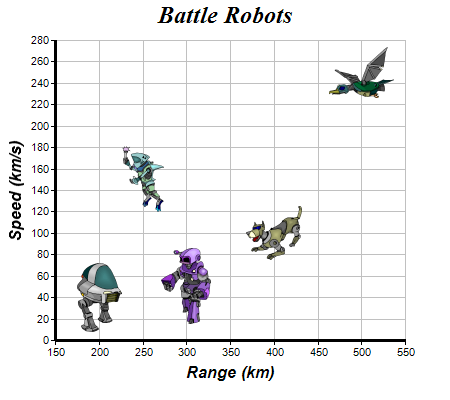

This example demonstrates using external image files as scatter symbols.
The chart in this example is created as 5 scatter layers using
XYChart.addScatterLayer, with each layer containing one point.
The symbols for the scatter layers come from external image files. They are loaded using
DataSet.setDataSymbol2.
The following is the command line version of the code in "cppdemo/scattersymbols". The MFC version of the code is in "mfcdemo/mfcdemo". The Qt Widgets version of the code is in "qtdemo/qtdemo". The QML/Qt Quick version of the code is in "qmldemo/qmldemo".
#include "chartdir.h"
int main(int argc, char *argv[])
{
// The XY points for the scatter chart
double dataX[] = {200, 400, 300, 250, 500};
const int dataX_size = (int)(sizeof(dataX)/sizeof(*dataX));
double dataY[] = {40, 100, 50, 150, 250};
const int dataY_size = (int)(sizeof(dataY)/sizeof(*dataY));
// The custom symbols for the points
const char* symbols[] = {"robot1.png", "robot2.png", "robot3.png", "robot4.png", "robot5.png"};
const int symbols_size = (int)(sizeof(symbols)/sizeof(*symbols));
// Create a XYChart object of size 450 x 400 pixels
XYChart* c = new XYChart(450, 400);
// Set the plotarea at (55, 40) and of size 350 x 300 pixels, with a light grey border
// (0xc0c0c0). Turn on both horizontal and vertical grid lines with light grey color (0xc0c0c0)
c->setPlotArea(55, 40, 350, 300, -1, -1, 0xc0c0c0, 0xc0c0c0, -1);
// Add a title to the chart using 18pt Times Bold Itatic font.
c->addTitle("Battle Robots", "Times New Roman Bold Italic", 18);
// Add a title to the y axis using 12pt Arial Bold Italic font
c->yAxis()->setTitle("Speed (km/s)", "Arial Bold Italic", 12);
// Add a title to the y axis using 12pt Arial Bold Italic font
c->xAxis()->setTitle("Range (km)", "Arial Bold Italic", 12);
// Set the axes line width to 3 pixels
c->xAxis()->setWidth(3);
c->yAxis()->setWidth(3);
// Add each point of the data as a separate scatter layer, so that they can have a different
// symbol
for(int i = 0; i < dataX_size; ++i) {
double xCoor[] = {dataX[i]};
double yCoor[] = {dataY[i]};
c->addScatterLayer(DoubleArray(xCoor, 1), DoubleArray(yCoor, 1))->getDataSet(0
)->setDataSymbol(symbols[i]);
}
// Output the chart
c->makeChart("scattersymbols.png");
//free up resources
delete c;
return 0;
}
© 2023 Advanced Software Engineering Limited. All rights reserved.